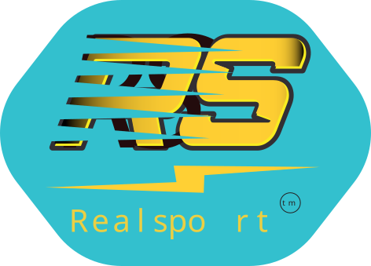

The logo in this team has features that were inspired by the logo for the Los Angeles lakers. The features im talking about are the colors, which are a dark mustard yellow, and a nice purple color. one thing i added to make this logo stand out was the halo esque ring around the ball. this acts as a hoop, and a halo to make them be like angels.
I chose the font for the logo because it looks energetic and makes me think of it being for a sporsts team. And for the mockups, i used the logo "varsity team" because i think it looks good on jerseys, and ive seen alot of sports jerseys and sports uniforms.
What the concept for this app is, is that you would take a picture of your fridge (and other places where you store food or ingredients), then you select what meal you want to make then the app scans your fridge using ai, and then it tells you what ingredients you need, and makes a grocery list for you.
The app would also remember what you have, and it would be able to give you tips based on what you have and or want

when making this i took inspiration from new balance's Logo (the stripes)
the reason for the colouring is that they compliment eachother, and the color yellow usually make people feel energetic, this also aplies to the bright teal
what i just said can also be aplied to the lightningbolt in the middle, as lightning is known for speed and rapidness
The reasoning for the font is that it is a nice thick font, which usually is a top pick for sports brands and teams. The font itself also looks "fast" or "in motion", which makes sense when the fonts name is "Race sport".
For this assignment I created a short mood film with the goal of communicating a specific feeling through light, angles, and sound without dialogue or text. I chose to convey sadness and melancholy. The film is built around a series of quiet, everyday shots: a snow-covered courtyard seen through a window at dusk, rain hitting a puddle in close-up, a tipped-over glass on a wooden floor, and a dark room lit only by a screen. Throughout, I kept a consistent visual language of cold, desaturated blue-green tones and still compositions to create a cohesive sense of loneliness and solitude. The film was shot on mobile and edited in Adobe Premiere Pro.
For this assignment I created a short photo novel told through video, using a simple story set in the school corridors. The format relies on visual storytelling combined with humorous sound effects to carry the narrative, rather than dialogue or narration. The clip follows a character moving through the hallway in a comedic style, with the handheld camera work adding to the lighthearted and slightly chaotic tone. The humorous sound effects were used deliberately to punctuate the action and give the piece a playful, cartoon-like feel. It was edited in Adobe Premiere Pro.
For this assignment I created a TikTok-style video for Snapchat, filmed in vertical 9:16 format and under one minute. The task required analysis of the target audience, an understanding of what performs well on TikTok, and a clear content concept with a hook within the first 2–3 seconds. The video I made is an informational clip about TikTok creators and how the platform's monetisation actually works — a topic designed to grab attention quickly and keep viewers watching. It opens with a bold hook about the biggest creators on TikTok, transitions through stock footage and close-up faces with contrasting text overlays, and ends with a reveal about how little money most creators actually earn per view. The video uses the "Content of Norway" bug-logo throughout and is structured with a clear narrative flow suited to TikTok's fast-paced format. It was edited in Adobe Premiere Pro.
For this assignment I created a YouTube-style video under 2 minutes, filmed in 16:9 format with an intro, title card, and bug-logo, as required. I chose to make an anime review, which falls under the product review category from the assignment brief. The video opens with an animated anime cityscape as a visual intro, before cutting to a talking-head format where I review an anime series directly to camera. The content is in English and includes subtitles, and I speak about the show's storytelling and characters in an engaging, conversational tone suited to a YouTube audience. The video was filmed in my room and edited in Adobe Premiere Pro.
For this assignment I produced a "man on the street" style interview video, where the goal was to create publish-ready content quickly using a camera and microphone. I prepared a set of questions and interviewed fellow students in the school corridors, with one person holding the mic and another operating the camera. The video opens with an animated title card introducing the format, before cutting to the interviews themselves. The filming takes place in handheld, run-and-gun style with natural indoor lighting, giving it an authentic and spontaneous feel suited to the genre. Multiple different students were interviewed, keeping the pacing varied and engaging. It was edited in Adobe Premiere Pro with graphic effects added to strengthen the final result.
This is a live link to the restaurant website I built for an assignment. I used clear visual hierarchy, strong brand colors, and easy navigation to make the page feel inviting and simple to use.
The layout is designed for quick access to the menu, reservations, and restaurant information, while the visuals keep the site looking modern and polished.
For this assignment I created a short documentary-style video about young basketball prodigies, highlighting their training routines and aspirations. The video features interviews with talented young players and coaches, showcasing their dedication to the sport.
The production involved handheld camera work to capture dynamic gameplay footage, combined with slow-motion sequences to emphasize key moments. I edited the piece in Adobe Premiere Pro, using upbeat music and smooth transitions to keep the energy high.